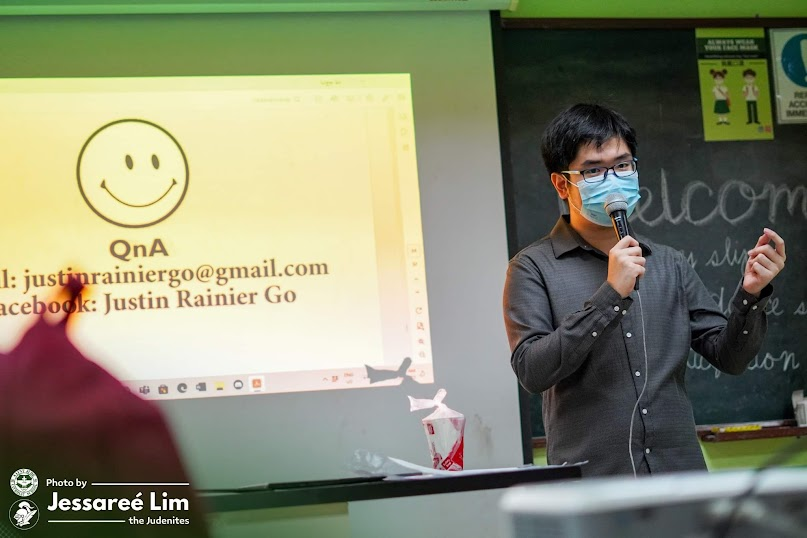

📸 Jessareé Lim / 2023Hello, world! I'm Justin Rainier Go, but you may call me Justin. I'd describe myself as someone who is logical and meticulous, as a computer scientist like me should be when creating efficient and effective software solutions. Thus, I sometimes spend a lot of time ensuring the correctness of whatever I write, be it a piece of code or this little writeup.
Interests
- natural language processing
- accessibility
- learning Japanese
Hobbies
- retro video games
- slice-of-life anime and manga